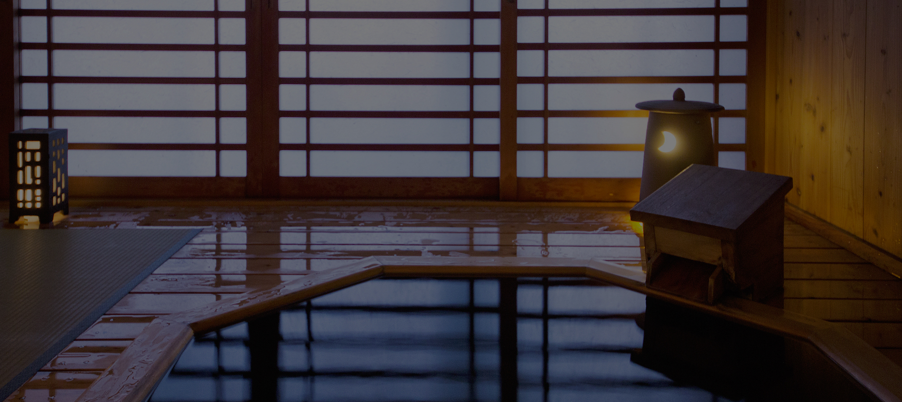

お風呂Bath


清都の大浴場は「死海塩風呂」
女将がイスラエルより直輸入した死海塩を大量に使用した自慢の湯です。
死海塩には多くのミネラルやカルシウムなど多くの成分が入っており肌にとても良いとされ【美の泉】とも呼ばれます。
『絶世の美女』と言われるクレオパトラも愛したとされています。
美肌の評判はもちろんのこと、デトックス効果もあり多くのお客様から、
「アトピーが治った」「花粉症が楽になった」「リュウマチが治った」などのお声もいただいております。
ぜひ死海塩風呂をご体験ください。
死海塩を使い女将が手作りするオリジナルクリームソープも髪の毛から足先まですべてご利用いただけます。
- 清都のおみやげ
- 死海の塩1kg 3,800円
※当館ご利用のお客様は2,500円 - 女将の手作り
「死海塩入りクリームソープ」200g 3,800円
※当館ご利用のお客様は2,160円